01 · CONTROL
지도와 스트리밍을 오가는 실시간 관제
위치 맥락은 지도에서, 다채널 영상은 스트리밍 그리드에서 확인합니다. 좌측 지역 트리와 카메라 상태를 연결해 탐색 경로를 줄였습니다.
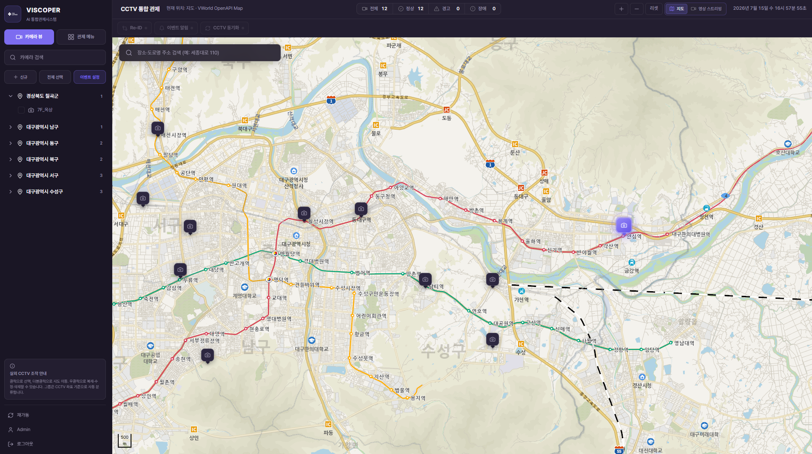
UI/UX Portfolio
VISCOPER와 SafeWatcher 프로젝트의 화면 설계와 인터랙션을 모았습니다.
AI 위험감지와 GIS를 결합한 CCTV 통합관제 플랫폼. 지도·스트리밍·이벤트 설정·통계·AI 어시스턴트까지 이어지는 화면 흐름입니다.

01 · CONTROL
위치 맥락은 지도에서, 다채널 영상은 스트리밍 그리드에서 확인합니다. 좌측 지역 트리와 카메라 상태를 연결해 탐색 경로를 줄였습니다.

02 · STREAM
여러 CCTV 채널을 동시에 모니터링하는 그리드 뷰를 구현하고, 채널별 상태와 영상 전환 UX를 설계했습니다.
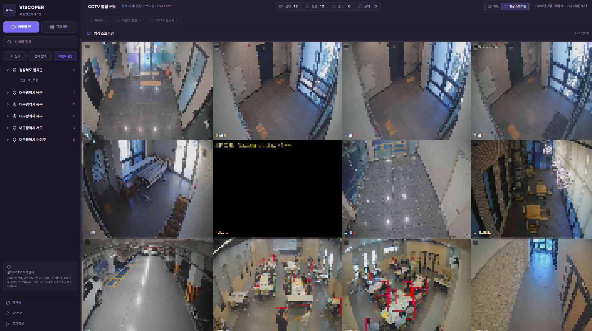
03 · DETECTION
전체·다각형·사각형·단방향·양방향 등 서로 다른 규칙을 하나의 편집 화면에서 관리할 수 있도록 구현했습니다.
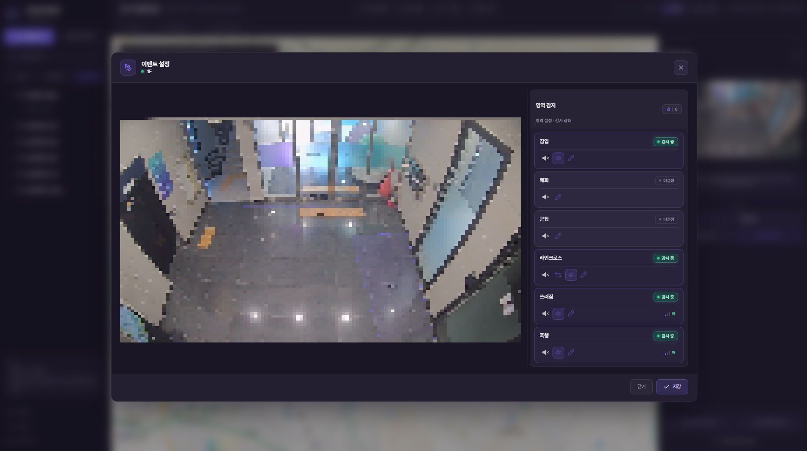
04 · INSIGHT
시간대·요일·이벤트 유형별 추이를 시각화하고, 조회 조건을 보고서 출력 흐름까지 유지해 화면 분석과 문서 공유가 이어지도록 구성했습니다.
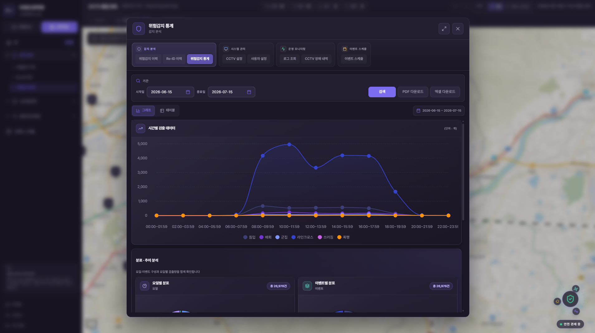
05 · AI ASSISTANT
사용자가 필요한 메뉴와 기능을 스스로 찾아갈 수 있도록, Python LLM 기반 사전형 안내 기능을 제공합니다.
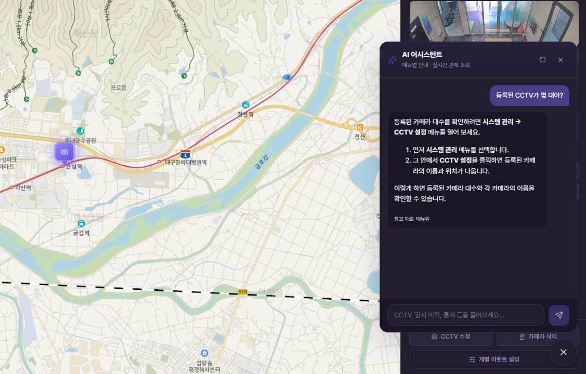
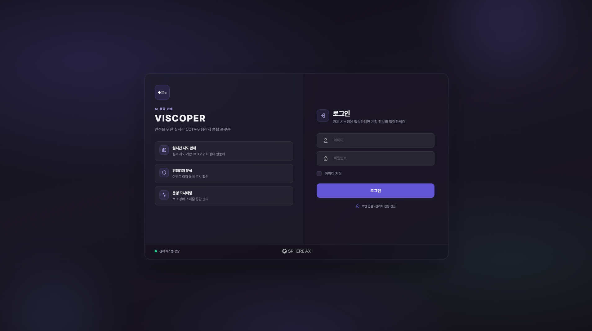
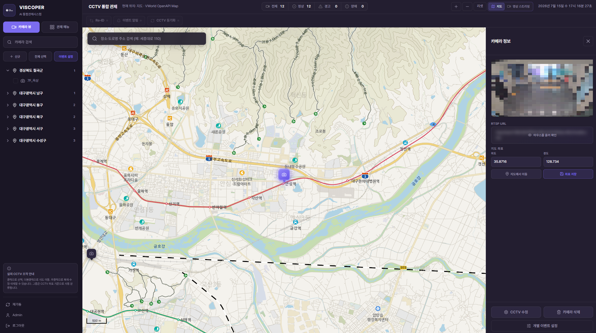
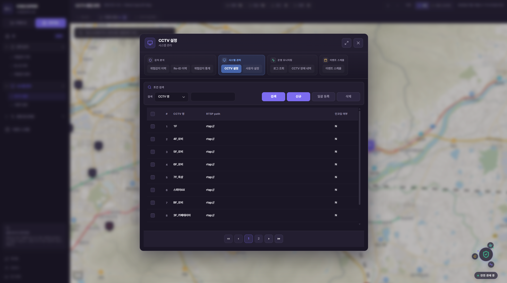
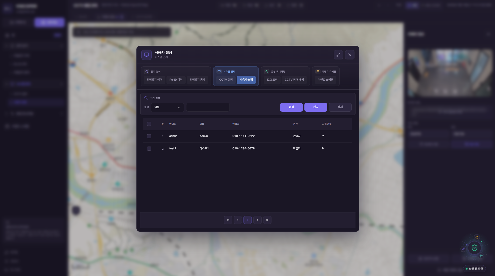
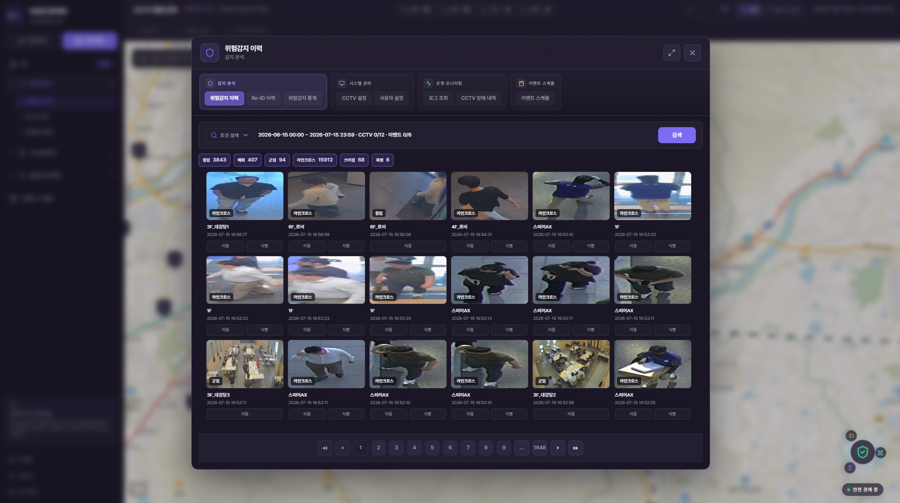
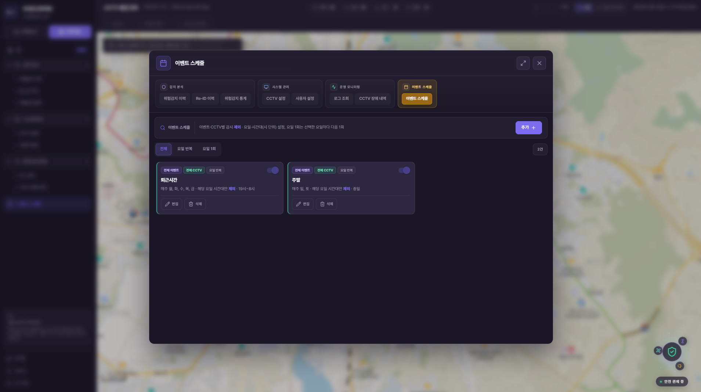
웹 관제와 WebView 기반 태블릿 알림, 모바일 친화형 사용자 웹을 제공하는 적응형 산업안전 솔루션의 UI/UX입니다.
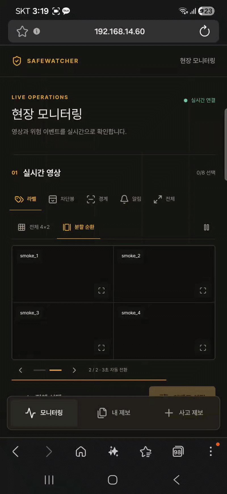
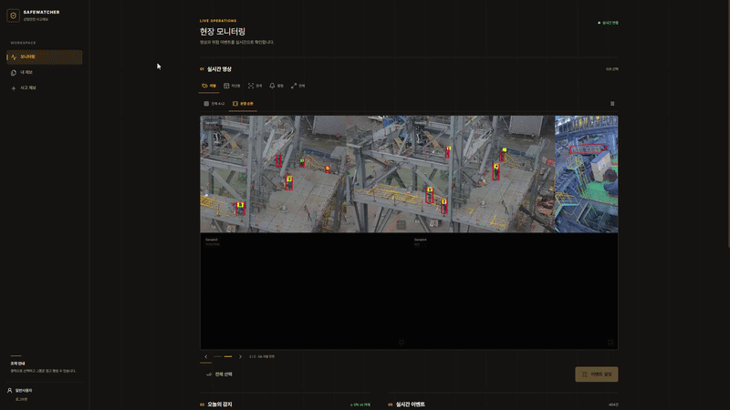
01 · RESPONSIVE
넓은 화면과 모바일 환경 각각에 맞는 레이아웃으로 일반 사용자 전용 서비스 흐름을 설계·구현했습니다.
02 · MOBILE
터치 친화적 인터페이스와 세로 화면에 최적화된 정보 배치로, 현장에서 바로 사용할 수 있는 모바일 웹을 제공합니다.